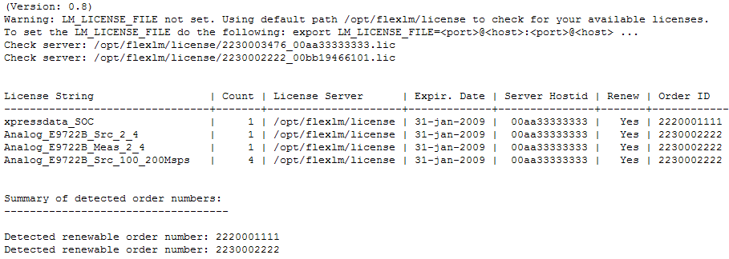

Running the getOrderNumbers tool
You must run the getOrderNumbers tool as preparation for the annual license renewal. The tool creates a complete list of the FlexLM licenses installed on your license servers. The output is one of the files required by the License Renewal Comparison Tool.
About this task
You will run the getOrderNumbers tool either on of the FlexLM license server hosts or on a SmarTest client. The tool is supported on RHEL 5 and RHEL 7.
To run the tool type:
./getOrderNumbers [-q<uiet>]
[-s<ummary>]
The command options are:
-q<uiet>: Hides detailed license information and displays only
the detected order numbers.
-s<ummary>: Displays only the summary
of all license quantities and does not split the counts per order number.
Before you begin
Make sure your license configuration either uses the default path /opt/flexlm/license, or you have set the LM_LICENSE_FILE environment variable. Otherwise, licenses cannot be found. See chapter 3 of the Macrovision FLEXlm End Users Guide for a complete explanation of how to use this environment variable to establish a multiple server network.
Procedure
Results
The created output file is the license inventory file required for the license renewal comparison process. The file lists the licenses of all license server which the getOrderNumbers tool has retrieved about the license file(s) in /opt/flexlm/license or the setting of the environment variable LM_LICENSE_FILE. It provides a table with all FlexLM licenses installed in your license environment, plus a summary of the detected renewable order numbers at the bottom.
Example

What to do next
The created license inventory file is required for the license renewal comparison process. For details see Executing a comparison.